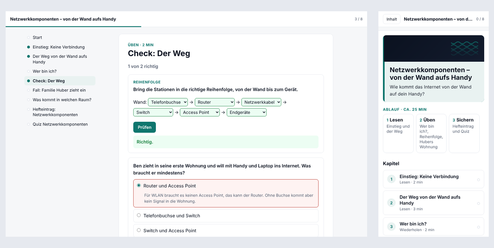

Du beschreibst einem KI-Assistenten, was du brauchst, oder gibst ihm dein Material. Er schreibt
daraus ein kurzes Drehbuch, das du liest und freigibst. Ein Skript macht aus dem Drehbuch eine Kurssicherung
(.mbz), die du auf der ByCS-Lernplattform (früher mebis) in deinen Kurs
lädst. Heraus kommt ein Kurs mit Texten, Übungen und Tests.
Die KI schreibt nur die Inhalte. Das Archiv aus über hundert verknüpften XML-Dateien baut der Generator
aus dem Drehbuch; nach deiner Freigabe wird nichts noch einmal abgetippt. Im Drehbuch steht der ganze Kurs als
kurzer Text mit Zeitschätzung je Element, und es ist markiert, was aus deinem Material stammt und was die KI
ergänzt hat.
Zip hochladen und schreiben: „Entpacke das und lies SKILL.md.“ Dahinter dein Kurswunsch, zum Beispiel
„Mach mir eine Einheit zu Bruchrechnen für Jgst 6, 45 Minuten, Selbstlernkurs. Zeig mir zuerst das Drehbuch.“
Drehbuch lesen, „passt“ sagen, .mbz herunterladen und
wiederherstellen.
Der Assistent braucht Code-Ausführung. Bei ChatGPT gehört sie je nach Version als „Datenanalyse“ zum
Standardmodell. Bei Claude steht sie je nach Version in den Einstellungen unter „Dateien erstellen und
analysieren“ und muss eingeschaltet sein; dort kannst du das Zip auch als Skill anlegen, dann genügt der
Kurswunsch.
Stell bei ChatGPT den Aufwand auf „Extra High“ (gibt es auch im Gratiskonto); mit mittlerem Aufwand wurde der
Kurs im Test deutlich dünner, ohne Grafiken und mit falschem Halt vor dem Bau.
In ChatGPT lief am 23.10.2026 ein Kurs mit kostenlosem Konto (Richtwerte); Durchläufe
in claude.ai stehen aus.
ByLKI oder AIS-Chat
Diese Angebote führen keinen Code aus. Eine Fassung im Browser, die aus dem Drehbuch die Sicherung baut,
kommt mit Version 2.0.
Bis dahin, noch nicht getestet: SKILL.md, references/intake.md und
references/kursdatei.md aus dem Skill-Zip als Text in den Chat einfügen und das Drehbuch schreiben
lassen. Den Bau übernimmt dann ein Assistent mit Code-Ausführung oder ab 2.0 die Fassung im Browser.
Claude Code, Codex, eigener Agent
Repository klonen und dem Agenten die Seite für
Fortgeschrittene geben. Dort steht, wie eine eigene Kurssicherung als Vorlage dient, wie eigene
Designvorlagen und Fachregeln entstehen und wie du das Zip neu packst.
Auf deinem Rechner nötig: Python 3.11+, PyYAML und Pillow.
Für ChatGPT und Claude wird auf deinem Rechner nichts installiert. Die erste Frage des Assistenten lautet „Womit
starten wir?“, danach kommt höchstens eine Fragerunde, jede Frage mit Vorschlag. Nennst du nur ein Thema, fragt er
nicht nach; seine Annahmen stehen oben im Drehbuch. Steht im ersten Satz schon alles wie im Beispiel, baut er sofort,
und mit „Zeig mir zuerst das Drehbuch.“ wartet er auf deine Freigabe. Wie viel du selbst entscheidest, legst du fest:
jeden Vorschlag einzeln, oder die KI macht alles.
Wie viel du vorgeben musst, hängt vom Modell ab. Ein starkes Modell mit hohem Aufwand baut aus einem Satz einen
brauchbaren Kurs. Ein kostenloses oder kleines Modell braucht deine Vorgaben: Phasen (Einstieg, Erarbeitung, Übung,
Sicherung), welche Übungstypen und Formate du willst, wie lang die Lesetexte sein sollen, welche Beispiele und welche
Fehlvorstellungen vorkommen. Je genauer die Beschreibung, desto weniger hängt das Ergebnis vom Modell ab; mit „Vorschläge
freigeben“ siehst du das Drehbuch, bevor gebaut wird.
Keine Schülerdaten, keine Namen oder Fotos von Personen ins Material. Ob private KI-Konten
dienstlich genutzt werden dürfen, regeln Schule und Sachaufwandsträger.
Was Kursmühle kann
Übung im Textfeld
Quiz, Zuordnen oder Lernkarten stehen als Block direkt zwischen den
Lesetexten auf der Kursseite, ohne Nachladen und ohne Bewertung.
Einheit als Website-Datei
Ein Abschnitt wird eine HTML-Seite mit Startseite,
Kapitelnavigation und Fortschritt, eingebettet oder in einem neuen Fenster.
H5P- und Moodle-Aktivitäten
Was eine Bestehensgrenze hat, für ein Badge zählt oder
abgegeben wird, bleibt eine Aktivität der Plattform und erscheint im Abschlussstatus oder im Bewertungsbuch.
Sechs Kursformate
Themen, Kacheln, Wochen, Ein-Themen, Komprimiert oder
Einzelaktivität; im Kachelformat bekommt jeder Abschnitt ein textfreies Kachelbild oder ein Icon.
Modultypen
Lesetexte als Seite, Lesebuch oder Buch, Übungen als H5P und alle acht
Moodle-Module von Test bis Glossar; die ganze Liste steht in der
README.
Designvorlagen
Drei Vorlagen (schlicht, kacheln, magazin) färben alle Textbausteine
ein; du wählst sie im Steckbrief.
Glossar-Import
Die Einträge eines Glossars liegen als XML-Datei neben der Sicherung
und kommen über „Einträge importieren“ in den Kurs.
Delta-Sicherungen
Neue Abschnitte kommen als eigene Sicherung per „Zusammenführen“
in einen laufenden Kurs; der Lernfortschritt bleibt erhalten.
Prüfdurchlauf
Bevor du das Drehbuch siehst, prüft der Assistent es gegen zehn
didaktische Standardannahmen und eine Markerliste gegen Slop und behebt die Treffer.
Beispiele
Drei Beispielkurse liegen im Repository und im Skill-Zip, mit eigenen Texten und selbst erzeugten Bildern.
Netzwerk9: Informatik 9, eine Einheit von 25 Minuten aus
Folien und Heftbildern; das Vorbild für neue Kurse.
Alltagskompetenz: Selbstlernkurs für die
Jahrgangsstufen 8 bis 10 im Kachelformat, mit Unterabschnitten, Badge und einer Delta-Sicherung.
Modulbeispiel: ein Abschnitt zu sicheren Passwörtern mit allen
acht Moodle-Modulen, etwa 45 Minuten.

Netzwerk9 im Website-Modus am Desktop und auf dem Handy.
Richtwerte
Im Fremdtest zu 1.0 bekam ein frischer Assistent der Sonnet-Klasse nur das Skill-Zip und den Satz „Mach mir eine
Einheit zu Bruchrechnen für Jgst 6, 45 Minuten, Selbstlernkurs.“ Sonnet ist die mittlere, günstigere Modellstufe von
Anthropic; der Skill soll ohne das teuerste Modell auskommen.
Größe
Durchlauf 1
Durchlauf 2
Bis zur fertigen .mbz mit Protokoll
5 min 10 s
5 min 46 s (erste .mbz nach etwa 3 min)
Tokens gesamt (Agent-Schnittstelle)
138 000
154 000
Rückfragen, die der Assistent gestellt hätte
2
0
Nachrichten an dich (Schätzung, ohne deine Lesezeit)
2
1
Bauläufe bis check.py OK
1
1
Der Fremdtest lief in Claude Code, einem Agenten mit Dateizugriff, nicht über den Upload in ChatGPT oder claude.ai.
Mit Version 0.1 lag ein kompletter Kurs mit mehreren Abschnitten und vom Assistenten erzeugten Bildern in ChatGPT bei
etwa sieben Minuten, eine Einzelbeobachtung ohne Protokoll. Das Protokoll liegt im
Repository.
ChatGPT mit kostenlosem Konto, 23.10.2026: Eingaben „Entpacke das und lies SKILL.md“, „Starte den Skill“, dann Weg
„Fragen“, Steuerungsgrad c und „Mathematik Satz des Pythagoras, 9. Klasse Mittelschule, Selbstlernkurs ca. 45 min,
eine Einheit“.
Größe
A: GPT-5.6 Terra, Aufwand Medium
B: GPT-6 Luna, Aufwand Extra High
Dauer
9 min (22:05–22:14), davon 4 min Halt mit der falschen Meldung, es gebe keine lauffähige Python-Umgebung
4 min (22:21–22:25), ohne Halt
Bilder
keine
drei selbst gezeichnete: beschriftetes Dreieck, Banner, Badge
Lesetext
drei kurze Lesetexte
rund 900 Wörter mit durchgerechneten Beispielen
Übungen
zwei Übungsblöcke
zwei Übungsblöcke
Abschluss
Abschlusstest
H5P-Abschlusstest mit zehn Fragen, davon acht Fälle
Der Import von Kurs B auf der Plattform steht aus. Durchläufe in claude.ai und ByLKI stehen aus. Das Protokoll liegt
im Repository.
Import getestet am 23.10.2026
Themen- und Kachelformat mit Kachelbildern, alle acht Moodle-Module,
Glossar-XML, Website-Modus (eingebettet) und Textfeld-Modus mit mehreren Blöcken; Delta-Sicherungen seit 0.1.
Nicht per Import geprüft
Die Formate Wochen, Ein-Themen, Komprimiert und Einzelaktivität; beim ersten
Einsatz in einen Testkurs importieren.
Kein offizielles Produkt der Plattform; wenn sich die Lernplattform ändert, passe ich den Skill an.
Wiederherstellen in fünf Schritten
So sieht der Import auf der ByCS-Lernplattform aus. Beim ersten Mal in einen Testkurs.
Kurs öffnen → Mehr → Kurs wiederherstellen. Die .mbz in das Feld „Datei“ ziehen, dann
Wiederherstellen.
Schritt „Bestätigen“: nur Weiter.
Schritt „Ziel“: als neuen Kurs in eine Kategorie; oder in diesen Kurs mit „löschen und dann
wiederherstellen“, nur so kommt ein anderes Kursformat mit; oder in diesen Kurs mit „zusammenführen“ für
Delta-Sicherungen, die hinten anhängen.
Schritt „Einstellungen“: Weiter. Schritt „Schema“: bei einem Formatwechsel „Kurseinstellungen
überschreiben: Ja“, sonst behält der Kurs sein bisheriges Format. Dann Wiederherstellen.
Danach: Hat der Kurs ein Glossar mit Einträgen, Glossar → Mehr → Einträge importieren mit der
mitgelieferten Datei …_glossar.xml. Badge aktivieren (Mehr → Badges), Kursbild prüfen, Probedurchlauf
als Schüler/in.
Eine Sicherung darf höchstens 500 MB haben. Übungs-Textfelder nach dem Import nie im Editor der
Plattform speichern, siehe Kann und noch nicht.
Wenn etwas nicht passt, reicht ein Screenshot an den Assistenten; er ändert die Inhalte und baut die Sicherung neu.
Bereits importierte Abschnitte lassen sich per Sicherung nicht nachträglich ändern. Wer korrigieren will, löscht den
Abschnitt und spielt die Delta-Sicherung neu ein; der Lernfortschritt in diesem Abschnitt geht dabei verloren.
Kann und noch nicht
Kann Sechs Kursformate mit beliebig vielen Abschnitten und Unterabschnitten.
Noch nicht Lernlandkarte, Mimo.
Kann Textfelder und Seiten mit Textbausteinen (Schritte, Tabellen, Kästen, Merke,
Bild mit Unterschrift) in drei Designvorlagen.
Noch nicht Lektion, Wiki, Datenbank, Chat, Workshop, externes Tool.
Kann Test mit Multiple Choice, Wahr/Falsch und Kurzantwort; Aufgabe, Datei,
Verzeichnis, Forum, Buch, Abstimmung, Glossar.
Noch nicht Weitere Fragetypen im Test (Zuordnung, Lückentext, numerisch), Zeitlimits,
Forum-Diskussionen.
Kann H5P: Lesebuch, Geschichte mit Entscheidungen, Quiz, Zuordnen, Lückentext,
Lernkarten.
Noch nicht Weitere H5P-Typen (Interactive Video, Image Hotspots, Memory).
Kann Feedback-Umfragen, Links und Videos (eingebettet), Badges, Kursbild,
Abschlussverfolgung.
Noch nicht Gruppen, Termine, Kursabschluss-Kriterien.
Kann Kursbanner, Kursbild und Kachelbilder, von der KI erzeugt, gerendert oder von
dir nach Prompt.
Noch nicht Abschnitts- und Kachelbilder automatisch aus dem Material.
Kann Website-Modus: ein Abschnitt als eine HTML-Seite mit Übungen und
Rückmeldung.
Noch nicht Bewertung und Abschluss je Übung in der Website, eigene Spiele und Simulationen
als Vorlage.
Kann Textfeld-Modus: formative Übungen als Block zwischen Lesetexten, mehrere
Blöcke je Kursseite.
Noch nicht Ausführung in der Moodle-App; die Übung zeigt dort den Hinweis, die Kursseite im
Browser zu öffnen.
Kann Zugriffsbeschränkung „sichtbar ab Datum“, Nachlieferung per
Delta-Sicherung.
Noch nicht Andere Zugriffsbedingungen (Abschluss von X, Bewertung, Gruppe).
Übungs-Textfelder nicht im Editor öffnen. Bearbeitest du ein Textfeld mit Übungsblock über
„Einstellungen bearbeiten“ und speicherst, entfernt der Editor der Plattform Skript und Stil; die Übung ist danach ein
totes Gerüst. Änderungen laufen über das Drehbuch und ein Delta oder einen Neuimport. Ungeprüfter Ausweg: den Texteditor
in den Nutzereinstellungen vorübergehend auf „Textbereich“ stellen, dann bearbeiten.
Die ausführliche Tabelle und die Roadmap stehen in der README.
Rückmeldung
Ich freue mich über Rückmeldungen: Hilft Kursmühle im Unterrichtsalltag, was fehlt, wo hat es gehakt?
Schreib mir an kursmuehle@pm.me
(öffnet der Link kein Mailprogramm, einfach die Adresse kopieren). Ein GitHub-Konto ist nicht nötig; wer am Code
mitarbeitet, kann zusätzlich ein Issue anlegen.
Am meisten hilft mir, wenn Fach, Jahrgangsstufe, Assistent und Dauer dabeistehen.
Gesammelte Rückmeldungen stehen in Erfahrungen.
Lizenz
Nicht kommerziell. Du darfst den Skill in Schule und Fortbildung nutzen, verändern und weitergeben; der Einbau in
kommerzielle Produkte oder Dienste ist nicht erlaubt. Code unter
PolyForm Noncommercial 1.0.0, Texte, Vorlagen und Beispielkurse unter
CC BY-NC-SA 4.0. Mit dem Skill erzeugte Kurse gehören dir.
Keine Verbindung zum Betreiber der Lernplattform. Sicherungen vor dem Einsatz in einem Testkurs prüfen; das
Drehbuch ist die Kontrollinstanz für Inhalte, die die KI ergänzt hat, und die fachliche Verantwortung bleibt bei dir.